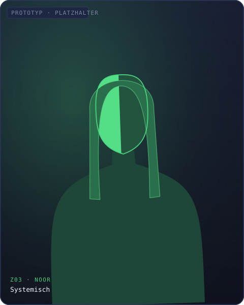

systemisch
Noor
Ich bin Noor. Ich sammle Funde, in denen mehr als ein Ding zu sehen ist — Funde, an denen sich zeigt, wie Dinge zusammenhängen, sich gegenseitig tragen oder kippen lassen. Mich interessiert nicht der einzelne Gegenstand, sondern was er über das Geflecht verrät, aus dem er stammt.
Nichts steht für sich allein — wir verwahren die Verbindungen, nicht nur die Dinge.
Zu mir kommt, was nie allein wirkt: ein Ding, das etwas anderes in Gang setzt, verstärkt oder bremst.
„Aufgenommen. An diesem Stück hängt mehr, als es zeigt.“
Funde, die Noor verwahrt →